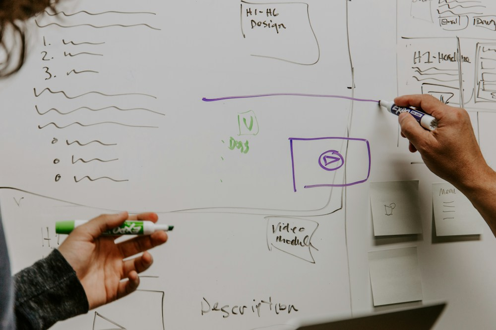

Example Project
Here is a made-up example of what a set of meeting notes might look like, and what those notes could turn into once they were organized into tasks.

Engineering Project Meeting
- Spencer will finish the CAD model by Friday.
- Sarah will contact the machine shop for a quote.
- Final dimensions need to be confirmed.
- Aluminum should be ordered after dimensions are confirmed.
- Prototype manufacturing should begin next week.
- Testing begins after the prototype is finished.
- The team will meet again next Wednesday.
Project Tasks
Spencer
- Finish the CAD model by Friday.
Sarah
- Contact the machine shop.
- Request a manufacturing quote.
Team
- Confirm final dimensions.
- Order aluminum after dimensions are confirmed.
- Manufacture the prototype next week.
- Begin testing after the prototype is finished.
Next Meeting
The team will meet again next Wednesday.
This is just one example, but it shows the basic idea. The notes on the left are what someone might actually type during a meeting. The tasks on the right are what those same notes could turn into once they are organized by person and broken into smaller steps.